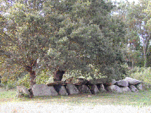
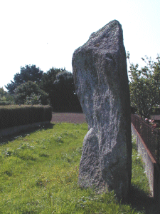
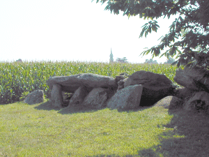
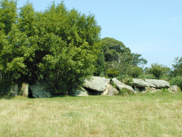
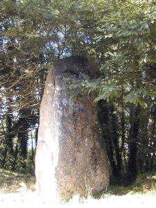
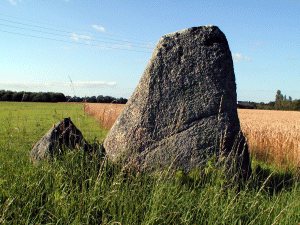
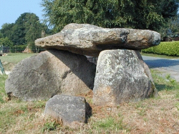

|

A deux pas du Bélon l'allée
couverte de Kermeur-Bihan.
|

A quelques mètres de la route qui
mène à Quimperlé, à Mentoul, ce
menhir était doué de pourvoir surprenants !
|
|

Visible de la route qui va de Moëlan
à Riec, l'allée de Kergonstance
|

La même vue de l'autre côté.
|
|

Menhir de Belle Vue, entre Kerglien et le
rond point de la route de Clohars.
|

Au bord de la route qui va de Moëlan
à Clohars, au lieu dit "Menhir", deux jumeaux de
tailles différentes.
|
|

A Keréven, près de la route qui
serpente à travers bois et champs en allant vers la
côte, j'ai découvert ce "mini dolmen" qui ne
figure pas sur les cartes. Est-ce un vrai , ou une
construction récente ? Je l'ignore.
|
Bien des mégalithes ont été
détruits par le passé, pour différentes
raisons, d'autres ont été
déplacés lors de la construction de route.

|

|
Si vous êtes
entré directement : entrée du site ici, accueil ici
|